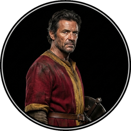

Cast of Characters
Click to hear their voice

ACT I
ACT I
Enter Sampson and Gregory armed with swords and bucklers.
SAMPSON.
Gregory, on my word, we’ll not carry coals.
GREGORY.
No, for then we should be colliers.
SAMPSON.
I mean, if we be in choler, we’ll draw.
GREGORY.
Ay, while you live, draw your neck out o’ the collar.
SAMPSON.
I strike quickly, being moved.
GREGORY.
But thou art not quickly moved to strike.
SAMPSON.
A dog of the house of Montague moves me.
GREGORY.
To move is to stir; and to be valiant is to stand: therefore, if thou art moved, thou runn’st away.
SAMPSON.
A dog of that house shall move me to stand.
I will take the wall of any man or maid of Montague’s.
GREGORY.
That shows thee a weak slave, for the weakest goes to the wall.
SAMPSON.
True, and therefore women, being the weaker vessels, are ever thrust to the wall: therefore I will push Montague’s men from the wall, and thrust his maids to the wall.
GREGORY.
The quarrel is between our masters and us their men.
SAMPSON.
’Tis all one, I will show myself a tyrant: when I have fought with the men I will be civil with the maids, I will cut off their heads.
GREGORY.
The heads of the maids?
SAMPSON.
Ay, the heads of the maids, or their maidenheads; take it in what sense thou wilt.
GREGORY.
They must take it in sense that feel it.
SAMPSON.
Me they shall feel while I am able to stand: and ’tis known I am a pretty piece of flesh.
GREGORY.
’Tis well thou art not fish; if thou hadst, thou hadst been poor John. Draw thy tool; here comes of the house of Montagues.
Enter Abram and Balthasar.
SAMPSON.
My naked weapon is out: quarrel, I will back thee.
GREGORY.
How? Turn thy back and run?
SAMPSON.
Fear me not.
GREGORY.
No, marry; I fear thee!
SAMPSON.
Let us take the law of our sides; let them begin.
GREGORY.
I will frown as I pass by, and let them take it as they list.
SAMPSON.
Nay, as they dare. I will bite my thumb at them, which is disgrace to them if they bear it.
ABRAM.
Do you bite your thumb at us, sir?
SAMPSON.
I do bite my thumb, sir.
ABRAM.
Do you bite your thumb at us, sir?
SAMPSON.
Is the law of our side if I say ay?
GREGORY.
No.
SAMPSON.
No sir, I do not bite my thumb at you, sir; but I bite my thumb, sir.
GREGORY.
Do you quarrel, sir?
ABRAM.
Quarrel, sir? No, sir.
SAMPSON.
But if you do, sir, I am for you. I serve as good a man as you.
ABRAM.
No better.
SAMPSON.
Well, sir.
Enter Benvolio.
GREGORY.
Say better; here comes one of my master’s kinsmen.
SAMPSON.
Yes, better, sir.
ABRAM.
You lie.
SAMPSON.
Draw, if you be men. Gregory, remember thy washing blow.
[They fight.]
BENVOLIO.
Part, fools! put up your swords, you know not what you do.
[Beats down their swords.]
Enter Tybalt.
TYBALT.
What, art thou drawn among these heartless hinds?
Turn thee Benvolio, look upon thy death.
BENVOLIO.
I do but keep the peace, put up thy sword,
Or manage it to part these men with me.
TYBALT.
What, drawn, and talk of peace? I hate the word
As I hate hell, all Montagues, and thee:
Have at thee, coward.
[They fight.]
Enter three or four Citizens with clubs.
FIRST CITIZEN.
Clubs, bills and partisans! Strike! Beat them down!
Down with the Capulets! Down with the Montagues!
Enter Capulet in his gown, and Lady Capulet.
CAPULET.
What noise is this? Give me my long sword, ho!
LADY CAPULET.
A crutch, a crutch! Why call you for a sword?
CAPULET.
My sword, I say! Old Montague is come,
And flourishes his blade in spite of me.
Enter Montague and his Lady Montague.
MONTAGUE.
Thou villain Capulet! Hold me not, let me go.
LADY MONTAGUE.
Thou shalt not stir one foot to seek a foe.
Enter Prince Escalus, with Attendants.
PRINCE.
Rebellious subjects, enemies to peace,
Profaners of this neighbour-stained steel,—
Will they not hear? What, ho! You men, you beasts,
That quench the fire of your pernicious rage
With purple fountains issuing from your veins,
On pain of torture, from those bloody hands
Throw your mistemper’d weapons to the ground
And hear the sentence of your moved prince.
Three civil brawls, bred of an airy word,
By thee, old Capulet, and Montague,
Have thrice disturb’d the quiet of our streets,
And made Verona’s ancient citizens
Cast by their grave beseeming ornaments,
To wield old partisans, in hands as old,
Canker’d with peace, to part your canker’d hate.
If ever you disturb our streets again,
Your lives shall pay the forfeit of the peace.
For this time all the rest depart away:
You, Capulet, shall go along with me,
And Montague, come you this afternoon,
To know our farther pleasure in this case,
To old Free-town, our common judgement-place.
Once more, on pain of death, all men depart.
[Exeunt Prince and Attendants; Capulet, Lady Capulet, Tybalt, Citizens and Servants.]
MONTAGUE.
Who set this ancient quarrel new abroach?
Speak, nephew, were you by when it began?
BENVOLIO.
Here were the servants of your adversary
And yours, close fighting ere I did approach.
I drew to part them, in the instant came
The fiery Tybalt, with his sword prepar’d,
Which, as he breath’d defiance to my ears,
He swung about his head, and cut the winds,
Who nothing hurt withal, hiss’d him in scorn.
While we were interchanging thrusts and blows
Came more and more, and fought on part and part,
Till the Prince came, who parted either part.
LADY MONTAGUE.
O where is Romeo, saw you him today?
Right glad I am he was not at this fray.
BENVOLIO.
Madam, an hour before the worshipp’d sun
Peer’d forth the golden window of the east,
A troubled mind drave me to walk abroad,
Where underneath the grove of sycamore
That westward rooteth from this city side,
So early walking did I see your son.
Towards him I made, but he was ware of me,
And stole into the covert of the wood.
I, measuring his affections by my own,
Which then most sought where most might not be found,
Being one too many by my weary self,
Pursu’d my humour, not pursuing his,
And gladly shunn’d who gladly fled from me.
MONTAGUE.
Many a morning hath he there been seen,
With tears augmenting the fresh morning’s dew,
Adding to clouds more clouds with his deep sighs;
But all so soon as the all-cheering sun
Should in the farthest east begin to draw
The shady curtains from Aurora’s bed,
Away from light steals home my heavy son,
And private in his chamber pens himself,
Shuts up his windows, locks fair daylight out
And makes himself an artificial night.
Black and portentous must this humour prove,
Unless good counsel may the cause remove.
BENVOLIO.
My noble uncle, do you know the cause?
MONTAGUE.
I neither know it nor can learn of him.
BENVOLIO.
Have you importun’d him by any means?
MONTAGUE.
Both by myself and many other friends;
But he, his own affections’ counsellor,
Is to himself—I will not say how true—
But to himself so secret and so close,
So far from sounding and discovery,
As is the bud bit with an envious worm
Ere he can spread his sweet leaves to the air,
Or dedicate his beauty to the sun.
Could we but learn from whence his sorrows grow,
We would as willingly give cure as know.
Enter Romeo.
BENVOLIO.
See, where he comes. So please you step aside;
I’ll know his grievance or be much denied.
MONTAGUE.
I would thou wert so happy by thy stay
To hear true shrift. Come, madam, let’s away,
[Exeunt Montague and Lady Montague.]
BENVOLIO.
Good morrow, cousin.
ROMEO.
Is the day so young?
BENVOLIO.
But new struck nine.
ROMEO.
Ay me, sad hours seem long.
Was that my father that went hence so fast?
BENVOLIO.
It was. What sadness lengthens Romeo’s hours?
ROMEO.
Not having that which, having, makes them short.
BENVOLIO.
In love?
ROMEO.
Out.
BENVOLIO.
Of love?
ROMEO.
Out of her favour where I am in love.
BENVOLIO.
Alas that love so gentle in his view,
Should be so tyrannous and rough in proof.
ROMEO.
Alas that love, whose view is muffled still,
Should, without eyes, see pathways to his will!
Where shall we dine? O me! What fray was here?
Yet tell me not, for I have heard it all.
Here’s much to do with hate, but more with love:
Why, then, O brawling love! O loving hate!
O anything, of nothing first create!
O heavy lightness! serious vanity!
Misshapen chaos of well-seeming forms!
Feather of lead, bright smoke, cold fire, sick health!
Still-waking sleep, that is not what it is!
This love feel I, that feel no love in this.
Dost thou not laugh?
BENVOLIO.
No coz, I rather weep.
ROMEO.
Good heart, at what?
BENVOLIO.
At thy good heart’s oppression.
ROMEO.
Why such is love’s transgression.
Griefs of mine own lie heavy in my breast,
Which thou wilt propagate to have it prest
With more of thine. This love that thou hast shown
Doth add more grief to too much of mine own.
Love is a smoke made with the fume of sighs;
Being purg’d, a fire sparkling in lovers’ eyes;
Being vex’d, a sea nourish’d with lovers’ tears:
What is it else? A madness most discreet,
A choking gall, and a preserving sweet.
Farewell, my coz.
[Going.]
BENVOLIO.
Soft! I will go along:
And if you leave me so, you do me wrong.
ROMEO.
Tut! I have lost myself; I am not here.
This is not Romeo, he’s some other where.
BENVOLIO.
Tell me in sadness who is that you love?
ROMEO.
What, shall I groan and tell thee?
BENVOLIO.
Groan! Why, no; but sadly tell me who.
ROMEO.
Bid a sick man in sadness make his will,
A word ill urg’d to one that is so ill.
In sadness, cousin, I do love a woman.
BENVOLIO.
I aim’d so near when I suppos’d you lov’d.
ROMEO.
A right good markman, and she’s fair I love.
BENVOLIO.
A right fair mark, fair coz, is soonest hit.
ROMEO.
Well, in that hit you miss: she’ll not be hit
With Cupid’s arrow, she hath Dian’s wit;
And in strong proof of chastity well arm’d,
From love’s weak childish bow she lives uncharm’d.
She will not stay the siege of loving terms
Nor bide th’encounter of assailing eyes,
Nor ope her lap to saint-seducing gold:
O she’s rich in beauty, only poor
That when she dies, with beauty dies her store.
BENVOLIO.
Then she hath sworn that she will still live chaste?
ROMEO.
She hath, and in that sparing makes huge waste;
For beauty starv’d with her severity,
Cuts beauty off from all posterity.
She is too fair, too wise; wisely too fair,
To merit bliss by making me despair.
She hath forsworn to love, and in that vow
Do I live dead, that live to tell it now.
BENVOLIO.
Be rul’d by me, forget to think of her.
ROMEO.
O teach me how I should forget to think.
BENVOLIO.
By giving liberty unto thine eyes;
Examine other beauties.
ROMEO.
’Tis the way
To call hers, exquisite, in question more.
These happy masks that kiss fair ladies’ brows,
Being black, puts us in mind they hide the fair;
He that is strucken blind cannot forget
The precious treasure of his eyesight lost.
Show me a mistress that is passing fair,
What doth her beauty serve but as a note
Where I may read who pass’d that passing fair?
Farewell, thou canst not teach me to forget.
BENVOLIO.
I’ll pay that doctrine, or else die in debt.
[Exeunt.]